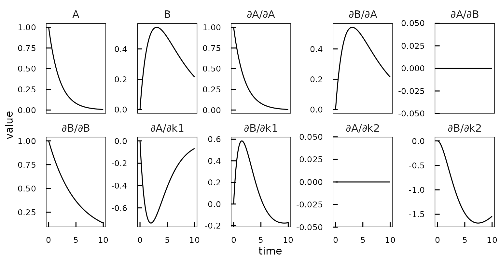

A decay chain \(A \to B \to
\emptyset\) from equations to a fit. Code generation needs a
C++17 compiler and Python with SymPy (Installation); models compile into
tempdir(), the default outdir.
Model definition and solution
cppODE() generates and compiles the solver of the
equations. solveODE() returns the states and their
sensitivities, the derivatives in every initial value and parameter.
eqns <- c(A = "-k1*A", B = "k1*A - k2*B")
parms <- c(A = 1, B = 0, k1 = 0.5, k2 = 0.2)
times <- seq(0, 10, by = 0.1)
chain <- cppODE(eqns, modelname = "chain")
out <- solveODE(chain, times, parms)
dim(out$tangent) # [time, state, parameter]
#> [1] 101 2 4
out$tangent[101, "B", ] # ∂B(10) / ∂(A, B, k1, k2)
#> A B k1 k2
#> 0.2143280 0.1353353 -0.1734757 -1.5411625longFormat() (listing) arranges states and
sensitivities for the figure.
ggplot(longFormat(out), aes(time, value)) +
geom_line() +
facet_wrap(~panel, scales = "free_y", ncol = 5) +
scale_x_continuous(n.breaks = 3)
Parameter estimation
The sensitivities give the gradient of a least-squares objective,
here for \(k_1\) and \(k_2\) from noisy readings of \(B\). The output includes \(t = 0\)
(includeTimeZero = TRUE), so the data grid starts
there.
set.seed(1)
tdata <- c(0, 1:10)
data <- out$variable[match(tdata, times), "B"] + rnorm(length(tdata), sd = 0.01)
objective <- function(k) {
sol <- solveODE(chain, tdata, c(A = 1, B = 0, k))
res <- sol$variable[, "B"] - data
structure(sum(res^2), gradient = 2 * colSums(res * sol$tangent[, "B", names(k)]))
}
fit <- optim(c(k1 = 1, k2 = 0.1), function(k) objective(k),
function(k) attr(objective(k), "gradient"), method = "BFGS")
fit$par
#> k1 k2
#> 0.4985936 0.1972220The Guide treats events, second-order and reverse-mode derivatives, steady states, batches of conditions, algebraic functions and the SUNDIALS backend; dMod2 builds observation functions, parameter transformations, objective functions, optimizers and profile likelihoods on cppDE.
Helper for the figures
# states and sensitivities of a solveODE() result in long format, one panel per quantity
longFormat <- function(out, states = colnames(out$variable), sens = TRUE) {
nt <- length(out$time)
value <- data.frame(time = out$time, panel = rep(states, each = nt),
value = as.vector(out$variable[, states]))
if (!sens) return(value)
tangent <- out$tangent[, states, , drop = FALSE]
grid <- expand.grid(time = out$time, state = states,
par = dimnames(tangent)[[3]], stringsAsFactors = FALSE)
panels <- c(states, sprintf("∂%s/∂%s", grid$state, grid$par))
long <- rbind(value, data.frame(time = grid$time,
panel = sprintf("∂%s/∂%s", grid$state, grid$par),
value = as.vector(tangent)))
long$panel <- factor(long$panel, levels = unique(panels))
long
}